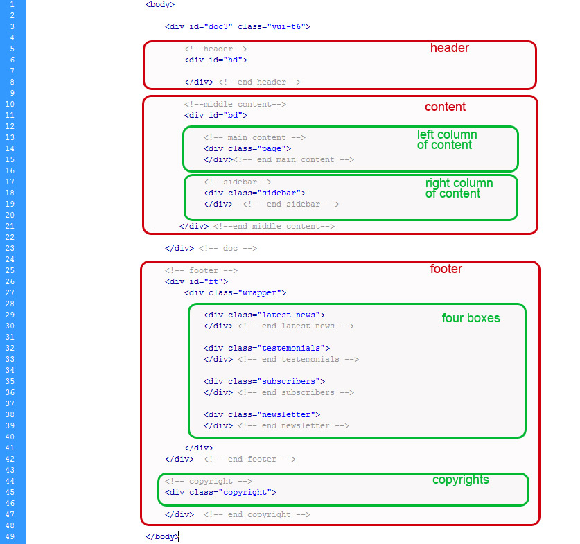

Created: 02.07.2010
By: onlinesolutions
Email: office@online.rs
Thank you for purchasing my theme. If you have any questions that are beyond the scope of this help file, please feel free to email via my user page contact form here. Thanks so much!
This theme is a fixed layout with one column in home page and portfolio page, and two columns in all other pages. All of the information within the main content area is nested within a div with an id of "bd" or class "bd-home".
Here is the template structure for home page ("home.html").
The two column page stucture ("about-us.html" & "contact-us.html") with class "page", and class "sidebar" looks like this.
Page "services.html" is the two column page stucture with class also, but it has a little bit different structure with class "services-page" and class "sidebar-services" looks like this.
The one column page ("portfolio.html") has following stucture.
If you would like to edit the color, font, or style of any elements in content, you would do the following:
.page p {
color: #somecolor;
}
If you find that your new style is not overriding, it is most likely because of a specificity problem. Scroll down in your CSS file and make sure that there isn't a similar style that has more weight.
I.E.
.content .page a {
color: #someColor;
}
If you want to change Logo image, just create image with max height: 60px and max width: 195px, and save as logo.png with transparent bg.
All images, as plaseholders, are kept in folder assets so you can just save your images there with same names and dimensions and thay will automaticly appear on the page.
If you want to insert more images in gallery its very important to include class "lightbox" in anchor tag, because if you don't include it will not work.
To change contact information just open mail.php file and change recipient mail, place where mails will be sent.
So, to ensure that your new styles are applied, make sure that they carry enough "weight" and that there isn't a style lower in the CSS file that is being applied after yours.
I'm using two CSS files in this theme. The first one is a generic YUI reset-fonts-grids file. Many browser interpret the default behavior of html elements differently. By using a general reset CSS file, we can work round this. This file also contains some general styling, such as anchor tag colors, font-sizes, etc. Keep in mind, that these values might be overridden somewhere else in the file.
The second file style.css is a main stylesheet, and contains all of the specific stylings for the page. The file is separated into sections using:
/* === Main Styles === */
Here you can change background pattern:
html{
background: #ffffff url(images/body-background.jpg) left bottom repeat-x;
height: 1260px;
}
/* === Header Section === */
Here you can change header image:
#hd {
background:url("images/header-bg-new.png") no-repeat center top;
}
/* === Menu Section === */
Here you can change menu appearance:
.menu {
clear: left;
position: relative;
left: 460px;
float: left;
width:535px;
height:30px;
outline:none;
}
/* === Page Section === */
Here you can change main content of page:
.content{
width:100%;
}
/* === Footer === */
Here you can change footer background image:
#ft {
background:url(images/footer-background.jpg) center bottom repeat;
}
If you would like to edit a specific section of the site, simply find the appropriate label in the CSS file, and then scroll down until you find the appropriate style that needs to be edited.
Any images that are placed within any page have 4px worth of padding and a background image. If you would like to edit the display of these images, find the following section in the style sheet, i.g. for contact us page:
.google-map img{
background: url(images/map-bg.png) no-repeat left top;
height:285px;
width:548px;
border:4px solid #dedcd1;
margin-top:5px;
}
This theme imports three Javascript files.
$(function() {
// initialize scrollable
$(".scrollable").scrollable({speed: 1200});
});
If you want to change the speed of transitions change the value in milisecundes
interval: 3000 // equal to 3 seconds
$(function() {
$(".lightbox").fancybox({
'titleShow' : false,
'transitionIn' : 'elastic',
'transitionOut' : 'elastic'
});
});
For updating the Fancybox effect please refer to the official Fancybox documentation
I've included five psds with this theme and they are all sliced:
If you'd like to change the main image in the header, open "Moderna-Home.psd", make the necessary adjustments, and then select header slice to save the file as "header-bg.png". Do the same for all other elements that are include in home page. All other files are sliced as well.
Every element is sliced and called appropriate in all .psd files
I've used the following images, icons or other files as listed.
Once again, thank you so much for purchasing this theme. As I said at the beginning, I'd be glad to help you if you have any questions relating to this theme. No guarantees, but I'll do my best to assist. If you have a more general question relating to the themes on ThemeForest, you might consider visiting the forums and asking your question in the "Item Discussion" section.
onlinesolutions